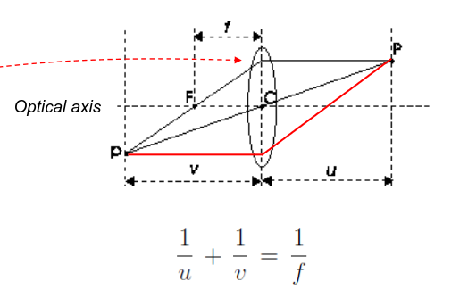
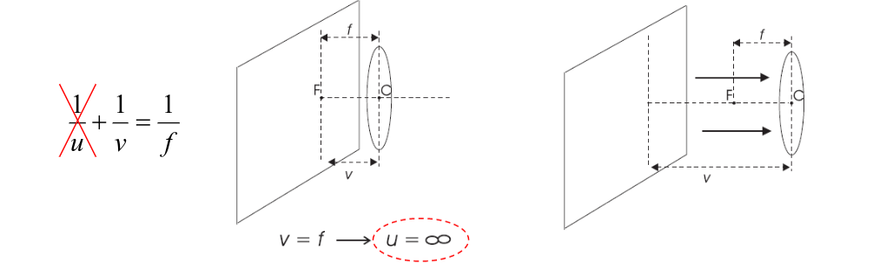

Lenses
In the Perspective projection we assume, as a model, the pinhole camera. However, that model has a major flaw: the amount of light captured is very low. In order to solve the problem, we have two possible solutions:
- Increase the hole (this results also in a blurrier image because each point in the original image is now a cone in the new image)
- Take more light over time (this could lead to a motion blur problem if the image has object in movements)
In order to ease the problems of the first solution, we can use Lenses. The pinhole model assumes an infinite depth of view, lenses limit that depth to a certain amount but allow a bigger hole and, as a consequence, more light. 
- P is the scene point
- p is the focused image point
- u is the distance from P to the lens
- v the distance from p to the lens
- f is the focal length (parameter of the lens)
- C center of lens
- F focal point of the lens
Choosing the distance of the image plane determines the distance at which scene points appear on focus image But to acquire scene points at a certain distance we must set the position of the image plane accordingly
Given a chosen point, every other object in a different focus point will appear out of focus. Those other points will be called circle of confusion or blur circle.
Diaphragm
It is the mechanical part that control the amount of light gathered by the camera.
Focusing mechanism

With a focal length long as the distance from p to the lens, we obtain a focus point at infinity, in any other case, the focus point move and the point in focus change.